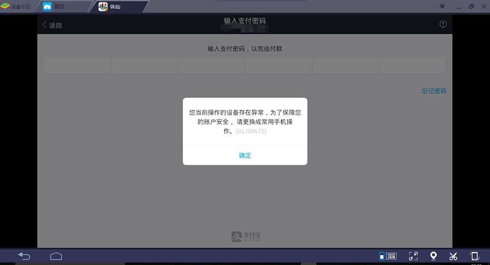
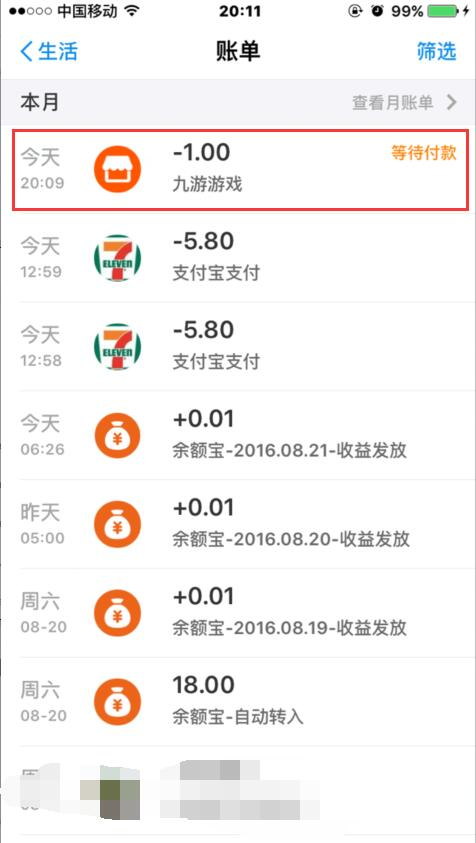
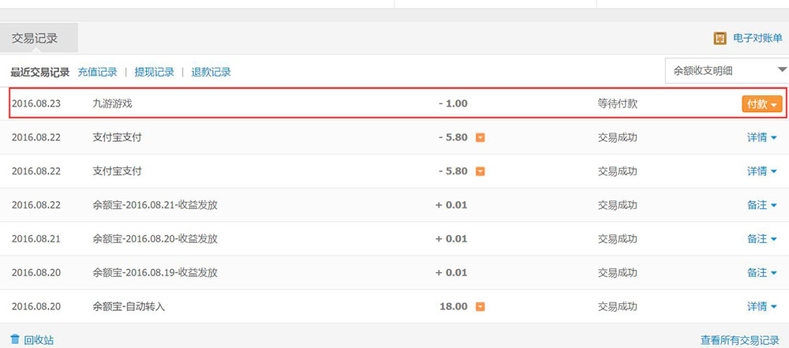

由于近期支付宝升级支付安全系统，导致蓝叠安卓模拟器内的游戏无法正常支付。给各位用户带来的不便敬请谅解。遇到此类问题的用户可以通过以下两种方式进行支付宝支付行为。

一、 支付宝APP端登陆支付
当游戏内用支付宝支付出现无法支付情况时，用户可以打开手机内的支付宝客户端，点击左上角账单，就可以看到您在蓝叠安卓模拟器内的游戏支付额度信息，然后根据支付流程完成支付，游戏内将会同步完成支付信息。

二、 支付宝网页端登陆支付
如果遇到无法通过支付宝APP端支付的用户，也可以通过网页端开打并登陆支付宝，在交易记录内可以看到游戏支付的信息，根据支付流程完成支付即可。

建议您检查是否开了360的核晶防护，或者是否有杀毒软件拦截了BlueStacks的服务，也可以尝试重新安装模拟器。
应用闪退？建议您提供应用的下载地址，我们会尽快帮您确认。
屏幕花屏或黑屏？建议您用驱动人生或者到显卡的官网更新显卡驱动，然后重启电脑。
以下FAQ可能解答了您的问题